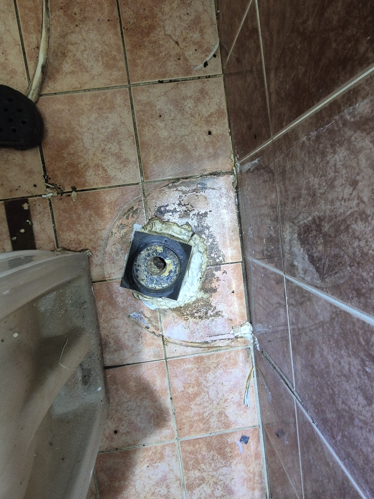
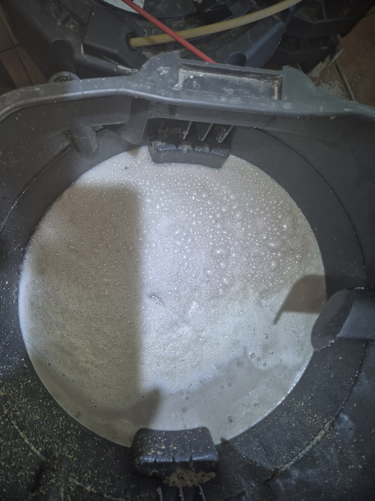
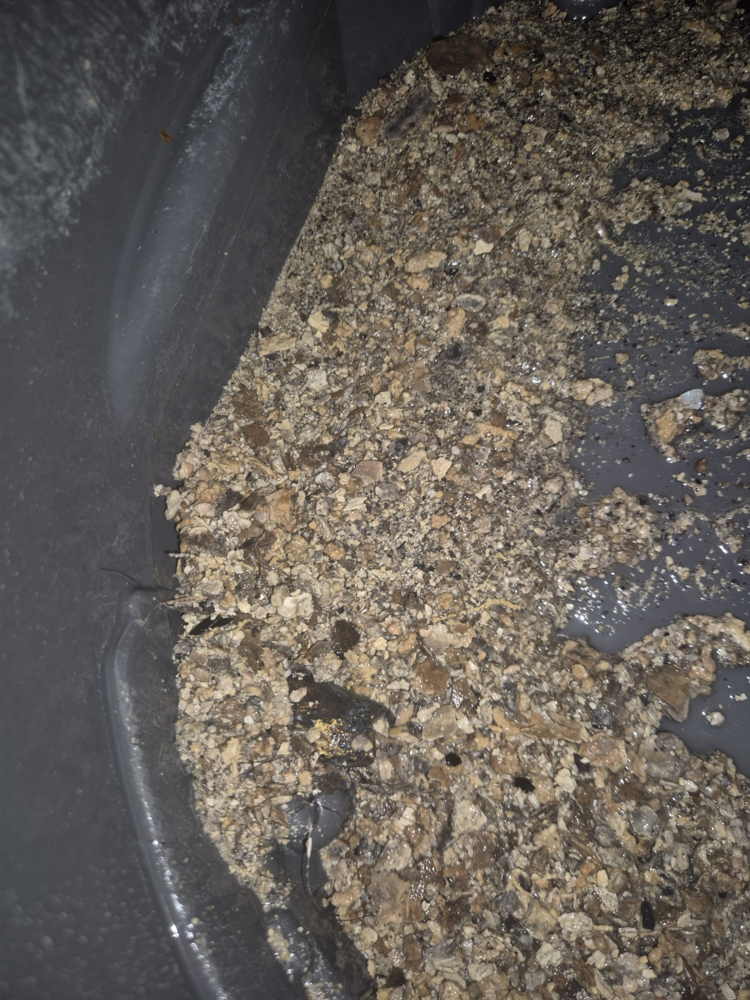
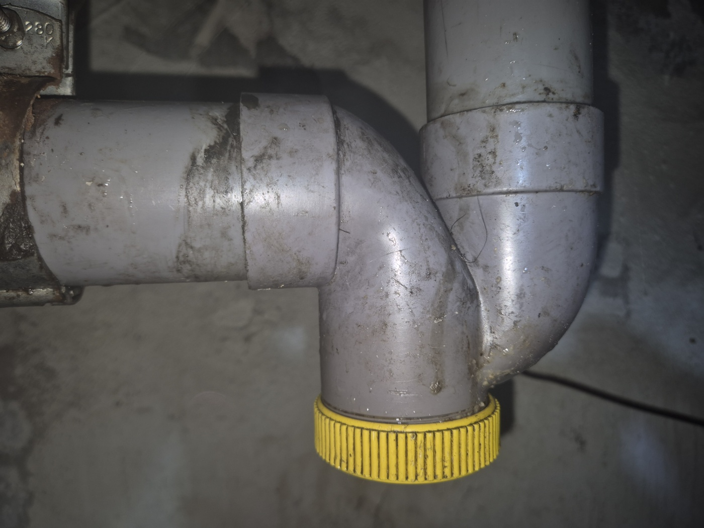
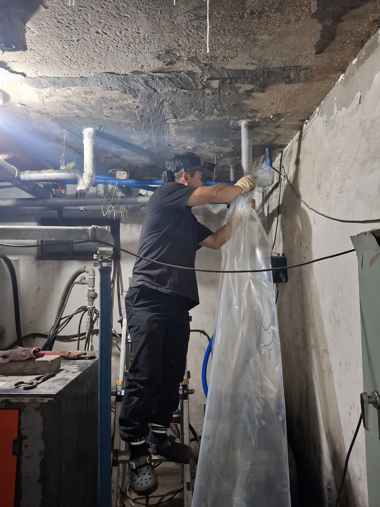

안녕하세요.. 고고고 설비입니다.. 이번에는 평택시 송탄에 있는 주유소에서 소변기가 막혔다는 연락을 받고 출동한 현장을 소개해드릴게요. 저희 블로그 글을 보고 전화 주신 현장이라 더 꼼꼼하게 작업했습니다.
화장실에 들어가서 바닥 배수구 쪽부터 상태를 살펴봤어요. 소변기 배관은 소변 속 찌꺼기가 굳어서 배관 벽에 쌓이기 쉬운 곳이라, 겉으로 보이는 문제와 배관 안쪽 상태가 다를 때가 많습니다.

먼저 약품으로 배관 안쪽에 굳어 있는 이물질을 풀어준 뒤 석션기로 빨아들였어요. 석션기 안으로 거품이 올라오면서 배관 안에 있던 것들이 끌려 나오기 시작했습니다.

석션기 통을 열어보니 톱밥처럼 잘게 부서진 찌꺼기가 가득 올라와 있었어요. 소변기 배관은 이렇게 오랜 시간 굳어 쌓인 찌꺼기 때문에 물이 천천히 내려가다가 어느 순간 완전히 막히는 경우가 많습니다.

소변기 아래 배관은 건물 지하에 있는 피트랩 쪽으로 이어져 있어서 지하로 내려가서 직접 확인했어요. 지하 배관 아래쪽에 노란색 마개가 달린 곳이 보였고, 여기를 열어서 안쪽 배관 상태를 점검했습니다.

지하 천장 쪽 배관 아래에는 비닐을 길게 늘어뜨려서 오수가 사방으로 튀지 않게 한 뒤 샤프트 작업을 진행했어요. 지하 공간은 좁고 천장도 낮아서 힘든 작업이었지만, 소변기 위쪽에서는 닿지 않는 구간까지 확실히 뚫어주기 위해 꼭 필요한 과정이에요.

작업을 마친 뒤 소변기에 물을 흘려보내서 시원하게 내려가는지 확인했어요. 영상으로 물이 막힘 없이 내려가는 모습을 직접 보실 수 있습니다.
주유소나 상가 화장실의 소변기는 사용 횟수가 많아서 배관 안쪽에 찌꺼기가 빠르게 쌓여요. 물 내려가는 속도가 느려지거나 냄새가 올라오기 시작하면 완전히 막히기 전에 점검받아 보시는 걸 추천드립니다. 소변기 위에서만 작업해서는 해결이 안 되는 경우도 많아서 지하 배관까지 같이 확인하는 게 중요해요.
고고고 설비는 주택, 아파트, 원룸, 상가, 공장의 생활 하수 오수 배관을 관리해 주는 업체입니다. 고고고 설비에 전화 주시면 친절상담 정확한 진단 확실한 해결로 보답해 드리겠습니다!!